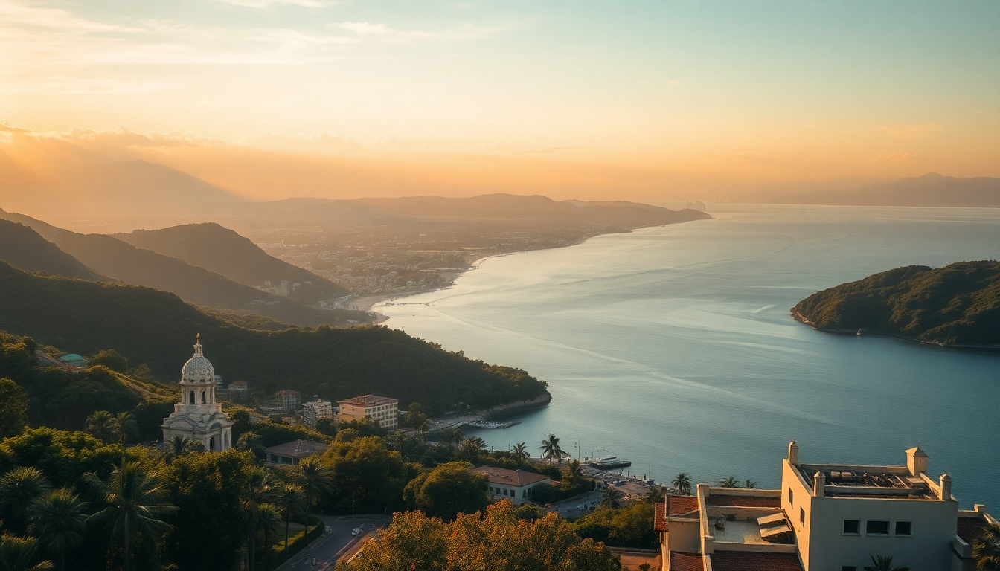

Best Cities to Visit in Mexico: Mexico City, Cancun, Guadalajara, Oaxaca & San Miguel de Allende

I’ve spent the last few years bouncing between Mexico’s cities—sometimes on assignment, sometimes just because I couldn’t stay away. Each one has a completely different vibe, and picking the right one for your trip matters more than you’d think. Here’s what I actually learned from sleeping in five of them.
Why visit Mexico City first?
Mexico City hits you with energy the moment you step out of the airport. It’s huge, chaotic, and rewarding if you know where to go. I’d recommend starting here because it gives you the best crash course in Mexican culture—food, history, art—without the resort bubble.
- Neighborhoods to base yourself: Roma Norte for cafes and nightlife; Condesa for tree-lined streets and quieter evenings; Centro Histórico if you want to be near the Zócalo and Templo Mayor.
- Don’t skip: The Museo Nacional de Antropología in Chapultepec Park—it’s world-class. Also, grab a torta at Café de Tacuba near the cathedral.
- Honest warning: Avoid the Frida Kahlo Museum on weekends unless you enjoy queueing for two hours. Book a weekday slot instead.
I stayed at Hotel Brick in Roma Norte—modern, clean, and walkable to Mercado Roma for quick eats. For transport, the Metro is cheap (5 pesos) but crowded; Uber is the better bet after dark.
Is Cancun just a tourist trap?
Yes and no. The Hotel Zone is exactly what you’ve seen on Instagram—chain restaurants, time-share hawkers, and beaches packed with loungers. But Cancun works as a launchpad for better things. I used it as a base for two days before heading south.
- Skip the Hotel Zone beaches: They’re fine but artificial. Instead, take a colectivo to Playa Delfines (free, public, and less crowded) or book a ferry to Isla Mujeres for the day.
- Where to eat off the strip: Los de Pescado in downtown Cancun serves killer fish tacos for under 50 pesos. Also, La Habichuela near Parque Las Palapas is a local institution.
- Stay smart: I booked a room at Hotel Xbalamqué near the ADO bus station. It’s not fancy, but it’s 15 minutes from the airport and a short walk to the downtown market.
If you’re after ruins, Chichén Itzá is a day trip, but I’d rather stay in Valladolid overnight and visit at 8 AM before the crowds show up.
What makes Guadalajara different from Mexico City?
Guadalajara feels more laid-back and less overwhelming. It’s Mexico’s second city, but the pace is slower. The food here leans heavily on birria and tortas ahogadas, and the tequila tours are legit.
- Best area to wander: Colonia Americana—full of art deco buildings, craft breweries, and rooftop bars. I spent an afternoon at La Feria (a local market with great aguachile).
- Don’t miss: The Hospicio Cabañas for its Orozco murals, and a day trip to Tlaquepaque for handblown glass and ceramics. For tequila, Tres Mujeres distillery in the town of Tequila does small-group tours that don’t feel like a factory line.
- Where I ate well: Birriería las 9 Esquinas for birria de res—messy, cheap, perfect. Also Casa Luna in Tlaquepaque for mole with a courtyard vibe.
I stayed at Hotel Cándido in Colonia Americana. Rooms are basic, but the location puts you walking distance to Mercado de San Juan de Dios (the biggest indoor market in Latin America—go hungry).
Why do people rave about Oaxaca City?
Oaxaca City is smaller, slower, and food-obsessed in the best way. It’s not a party town—it’s a place to eat, drink mezcal, and wander through colonial streets without a plan. I’d say it’s the most authentic of the five cities, but that word gets thrown around too much. Let’s say it feels less curated.
- Must-do food stops: Mercado 20 de Noviembre for tlayudas and tasajo; Casa Oaxaca for a splurge dinner (book ahead); La Biznaga for affordable Oaxacan fusion.
- Mezcal tasting: Skip the touristy spots on Macedonio Alcalá. Walk to Mezcaloteca for a proper guided tasting with no pressure to buy.
- Day trip: Monte Albán is a 20-minute drive from the center. Go early to beat the heat and the tour groups.
- Where I slept: Hotel Púpulo—a small converted house near the zócalo. No frills, but the rooftop has a view of the cathedral and the owner makes fresh coffee each morning.
One warning: the altitude (1,500 meters) hit me harder than expected. Drink water, skip the first round of mezcal, and pace yourself.
Is San Miguel de Allende worth the hype?
San Miguel de Allende is beautiful—almost too beautiful. The pink Parroquia church, the cobblestone streets, the bougainvillea-covered walls. But it’s also the most expensive city on this list, and it feels like a colonial theme park at times. I liked it, but I wouldn’t spend more than three days here.
- What to do: Wander up to El Mirador for sunset views. Visit Fabrica La Aurora (a converted textile factory with art galleries). Take a cooking class at Sazon Cooking School—small groups, hands-on, and you eat everything.
- Where to eat: El Pegaso for traditional Mexican breakfasts (try the chilaquiles). La Posadita for rooftop dining overlooking the Parroquia—touristy but the view is real.
- Where I stayed: Casa de la Cuesta—a boutique hotel with a terrace garden and a pool. It’s a 10-minute walk uphill from the center, which keeps it quiet.
- Honest take: The art scene is strong, but prices for galleries and shops are inflated for expats. Buy your souvenirs in Oaxaca instead.
FAQ
Is it safe to travel between these cities by bus? Yes, if you use first-class buses like ADO or ETN. I took ADO from Mexico City to Oaxaca (6 hours) and from Cancun to Valladolid (2 hours). The buses are comfortable, have AC, and stop at secure terminals. Avoid night buses if you can, and always keep your bag on your lap.
What’s the best time of year to visit these cities? November through March is the sweet spot—dry season, cooler temps, and fewer rainy afternoons. December and January get crowded with holiday travelers. September and October can be rainy, especially in Cancun and Oaxaca. I’d avoid Cancun during August (hurricane risk plus humidity).
How many days should I spend in each city? Minimum three days per city, except San Miguel de Allende (two to three is enough). Mexico City needs at least four days to scratch the surface. Oaxaca City works well with three days plus a day trip to Monte Albán or Hierve el Agua. Guadalajara can be done in three days if you include a tequila tour. Cancun: two days as a base, then move on to Tulum or Bacalar.
Conclusion
- Start in Mexico City for culture and food density, then fly to Oaxaca for a slower pace and better mole.
- Use Cancun as a transit hub, not a destination—skip the Hotel Zone and head to Isla Mujeres or Valladolid.
- Guadalajara is underrated: good tequila, low crowds, and a strong local food scene.
- San Miguel de Allende is photogenic but overpriced—visit for two days, then leave.
- Book buses (ADO) and domestic flights (Volaris, VivaAerobus) ahead of time to save money.